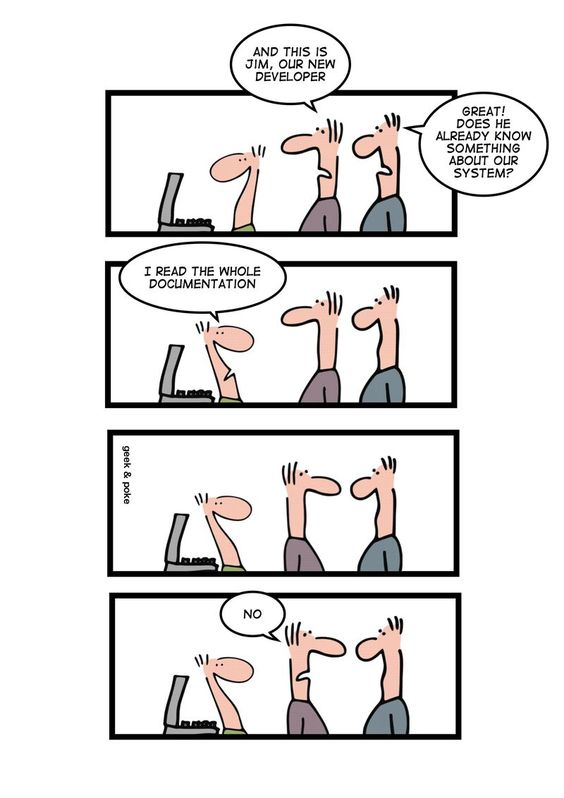

|
TIF 2023/2024: Introduzione a Linux e alla linea di comando
|
Questa parte del corso si pone l'obiettivo di familiarizzare gli studenti con il sistema operativo Linux e l'uso della linea di comando.
Dopo una prima lezione introduttiva (qui le trasparenze),
i due incontri successivi si svolgeranno nelle aule informatiche F e G al
primo piano interrato. Nelle aule sono disponibili computer. Per accedere utilizzate le credenziali che vi sono state consegnate all'iscrizione. È più semplice tuttavia utilizzare un proprio
portatile.
Parleremo spesso di immettere un comando. Significa scrivere all'interno del terminale il testo del comando, facendo attenzione a lettere minuscole e maiuscole, e poi premere il tasto Invio.
Utenti MacOS
Il sistema operativo MacOS prende origine da un sistema Unix. Contiene nativamente la finestra di comandi e
tutti i principali shell.
- Aprite Applicazioni --> Utility
- Lanciate l'applicazione Terminale cliccando due volte la sua icona
- Cliccate col tasto destro sull'icona del Terminale nella barra delle applicazioni. Aprite il menù Opzioni e scegliete che l'icona sia sempre presente nella barra. In questo modo diventa immediato lanciare la finestra di comandi quando è necessario.
Per verificare quale shell state usando immettete il comando echo $SHELL.
Se la risposta non è /bin/bash, immettete il comando chsh -s /bin/bash (vi verrà
chiesta la vostra password prima di procedere). Questo farà biventare bash il vostro shell di default.
Utenti Windows
È necessario installare il Windows Subsystem for Linux (WSL) di Microsoft
- Cliccate sull'icona Start
- Nella finestra di ricerca digitare cmd oppure prompt
- Aprire il prompt dei comandi in modalità amministratore facendo clic con il pulsante destro del mouse e selezionando "Esegui come amministratore", immettere il comando wsl --install (poi invio), quindi riavviare il computer.
Questo comando consente di abilitare le funzionalià necessarie per eseguire WSL e installare la distribuzione Ubuntu di Linux con bash come shell di default
La prima volta che si avvia una distribuzione Linux appena installata, verrà aperta una finestra della console e verrà chiesto di attendere il tempo necessario a decomprimere e archiviare i file nel computer. Tutti gli avvii successivi dovrebbero richiedere meno di un secondo.
Vi verrà anche richiesto di inserire uno username e una password per WSL, che può essere diverse dallo username e password su Windows.
Per verificare quale versione di Linux state usando immettete il comando lsb_release -a.
Per verificare quale shell state usando immettete il comando echo $SHELL.
Il comando wsl --install, come default, installa soltanto l'interfaccia a linea di comando a Linux. Di conseguenza nessuna interfaccia grafica è nativamente disponibile.
Per tutti gli utenti, per imparare qualsiasi sistema operativo o linguaggio di programmazione
- Non si può imparare a programmare mandando a memoria
- Non si può imparare a programmare soltando leggendo dei manuali o dei libri di testo
- Si impara solo facendo. Fare significa sedersi al computer, battere i comandi e, provando e riprovando,
farli funzionare, ottenendo il risultato corretto
Di conseguenza il corso utilizza il metodo dell'Insegnamento Capovolto per massimizzare il tempo che passate
davanti alla tastiera. Prima di ogni incontro vi verrà assegnato una parte del materiale che dovrà
essere studiata prima di venire in classe. Gli incontri verranno dedicati a chiarire eventuali dubbi e a
verificare la comprensione del materiale su una serie di esercizi di programmazione.

Registatevi al corso appena possibile sulla pagina Campusnet
(https://fisica.campusnet.unito.it/do/corsi.pl/Show?_id=c6ay) in modo che io possa raggiungervi via mail per eventuali comunicazioni.
Commenti e suggerimenti sono i benvenuti.
Programma 2023/2024
- Struttura ad albero del filesystem
- Lo shell: bash
- Come muoversi nel filesystem: pwd, cd, find, mkdir
- Operare su file: mv, cat, head, tail, more, cp, rm, grep
- Wildcards
- Command pipes
- Scripts
- Il PATH:file eseguibili e non, permessi
- Background/foreground
Esercizi per impratichirsi
Esercizi
MicroBibliografia
Il materiale su Bash disponibile sul web è molto vasto. Fortunatamente, i concetti fondamentali sono pochi e ben definiti. Qualche suggerimento:
[HomePage]